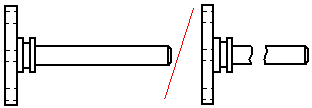

Broken views
Creating broken views
You can create broken views in the Draft environment using the Broken View command and the Broken-Out command.
-
You can use the Broken-Out command
 to create a broken-out section view. This exposes interior features of a part so
you can document them.
to create a broken-out section view. This exposes interior features of a part so
you can document them.
-
You can use the Broken View command
 to define regions you want to completely remove in a part view. This allows you to
create a broken view of a long, slender part so you can display it at a larger scale.
to define regions you want to completely remove in a part view. This allows you to
create a broken view of a long, slender part so you can display it at a larger scale.
You can use the same break lines to break a principal, section, or auxiliary view that is folded from (perpendicular to) the source view. Use the following shortcut commands:
Note:If you break a view with a user-defined axis, new views that you fold from the broken view do not inherit the break line.
Note:If you apply break lines to a drawing view before you create a folded view, then the break lines are inherited by the folded view automatically.
Modifying broken views
After you create a broken view, the profile or the break lines used to define it are hidden. You can modify the broken view using the original profile or break lines, but first you have to expose them for selection.
-
To expose the profile used to create a broken-out section view, use the Show Broken-Out Section View Profiles option on the General tab in the Drawing View Properties dialog box.
-
To expose the break lines used to create a broken view, deselect the Show Broken View option
 on the Drawing View Selection command bar.
on the Drawing View Selection command bar.
You also can define a clipping plane to remove additional geometry from a broken-out section view using the Set Drawing View Depth command.
How do I
Create a broken-out section viewModify a broken-out section view
Create a broken view
Break an isometric view with a break axis
Connect a break line at a distance
Display break lines and cropped edges in a broken view
Modify break lines in a broken view
Copy break lines between drawing views
Remove inherited break lines
Look up more details
Broken-Out commandBroken View command
Broken View command bar
Inherit Break Lines command
Remove Break Line Inheritance command